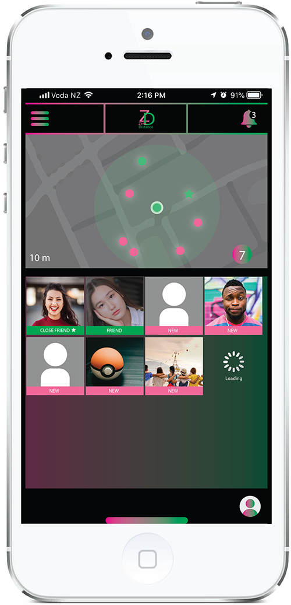
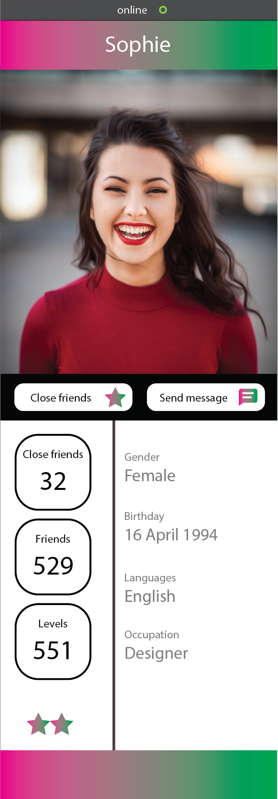
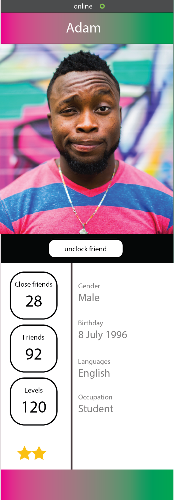

ZERO DISTANCE TO STAY AS CLOSE AS YOU CAN



ZERO DISTANCE TO STAY AS CLOSE AS YOU CAN
Having problems of walking past friends without knowing it ? With Zero Distance this will not happen anymore. Zero Distance is an outdoor social app that user can only be used outdoor. User can build communication skills and confidences by using the app and more chances to speak with people from different cultures and stories.
While outdoor , the app will show people who is online near user ( 7-10 meter from user) . To achieve ' face to face ' talk , user can only add friends by scanning qr code on one others. User will gain 1 friendpoint each time when added a new friend. Also user will get notifications from the app when they walked past or toward closefriends so user dont missed out friends on the street .
To use Zero Distance user need to enable the camera and location service on devices. User can hide profile and basic info if user wants to go online only with friends without getting interrupted by other users. User cannot send any message to the nearbly new user unless they get to know each other and became friend on Zero Distance. Friendship points is a great way to start a conversation between users and to avoid the awkwardness.

Green is a color with close and distinctive ties to nature, the environment, and all things to do with the great outdoors. Pink are thought to promote sensuality, and passion, as well as creativity, energy.Considered to the app content mostly for teenager, these colors are a great match